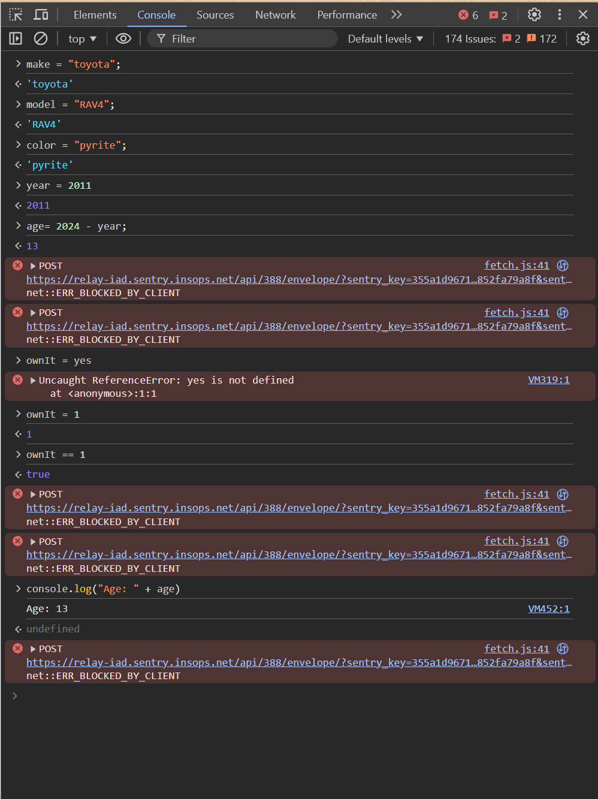
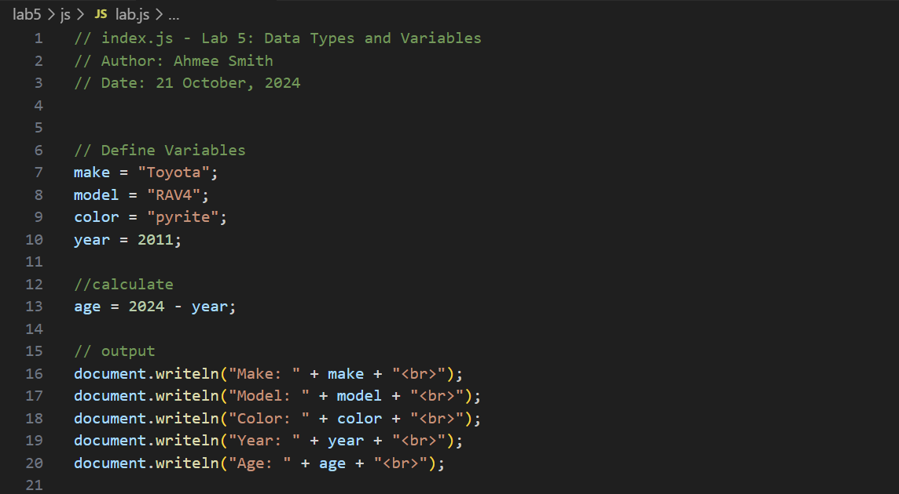
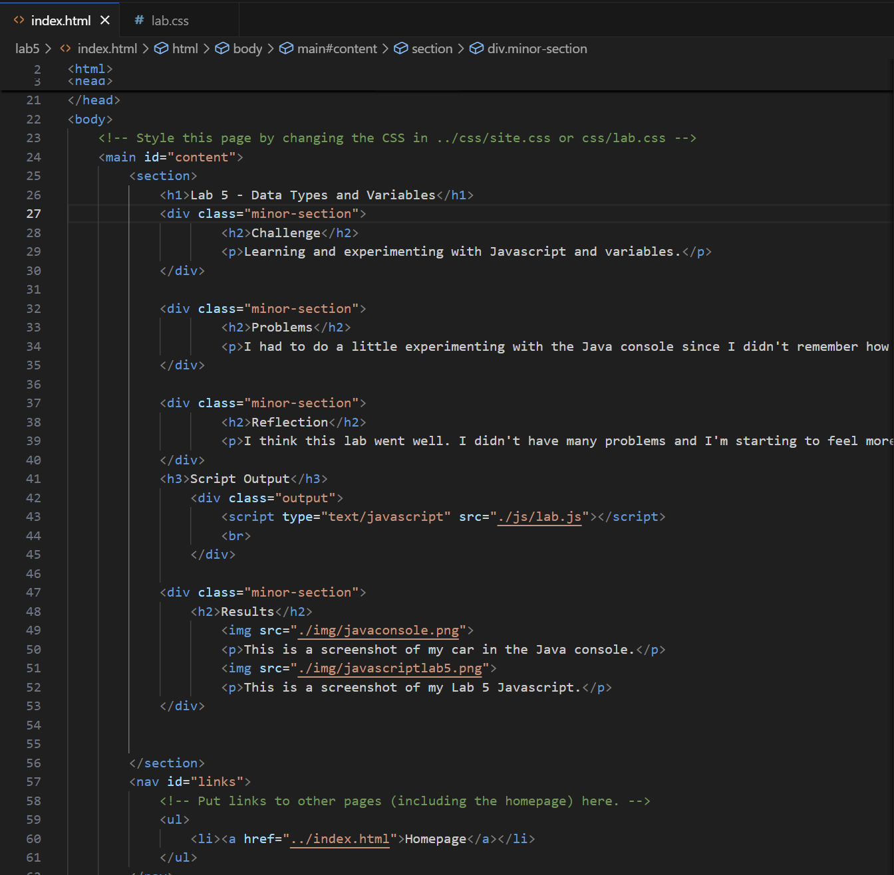

Lab 5 - Data Types and Variables
Challenge
Learning and experimenting with Javascript and variables.
Problems
I had to do a little experimenting with the Java console since I didn't remember how to do the console log but I figured it out pretty quickly. I also didn't know what the "br" meant in Writeln but I found out it means line break.
Reflection
I think this lab went well. I didn't have many problems and I'm starting to feel more solid in remembering html and css tags without having to look them up. I put an average amount of energy into this assignment, but I still made sure that I was understanding the new material in Javascript and also added some extra css styling.
Script Output
Results
This is a screenshot of my car in the Java console.
This is a screenshot of my Lab 5 Javascript.
This is a screenshot of my source code.